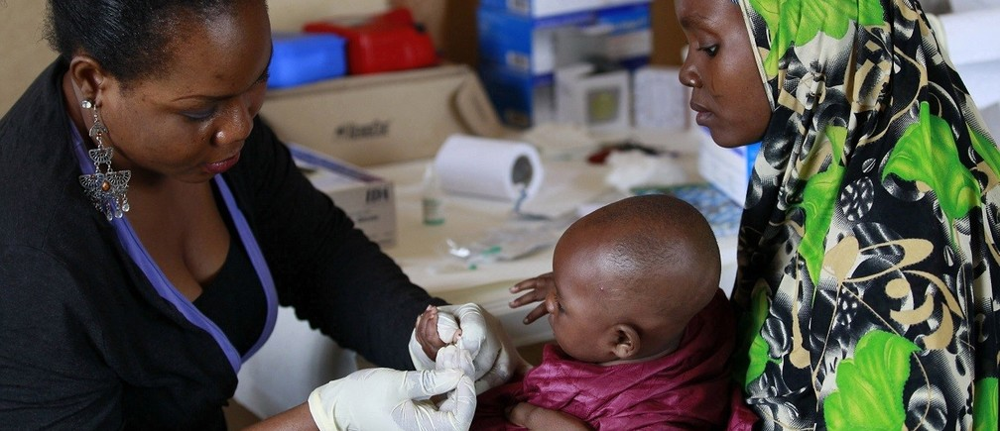

January 19, 2023
This is a Hackathon project sponsored by 10Alytics
This project is aimed at finding the leading causes of health crisis in Africa and recommending solutions to reduce these health crisis.
I scraped 1 dataset while 6 others were provided. I cleaned and Modelled these 7 datasets to come with my insights and recommendations.


This is a time series analysis for a network service provider company in Nigeria. It is Hackathon project sponsored by the DataFest Africa community aka Data Community Africa. I am proud to also announce that my team came the first runner up for the competition. The project is aimed at tackling the causes leading to a delayed reponse and resolution to customer's complaints.
An analysis carried out as directed by Udacity project course. This project focused on my data gathering skills using Python. Three datasets were gathered from different sources including web scraping, Twitter API querying, and just downloading the available csv file. Data Assessment and Data cleaning process was carried out on the three datasets. I went further to derive insights and design a dashboard using power bi.